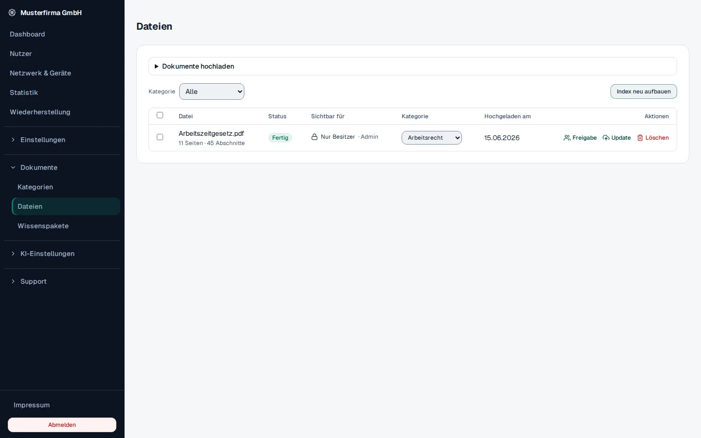

Quickstart
From “Download” to the first sourced answer, on your own hardware, in under two minutes of reading.
Check the requirements
A machine with 8 GB VRAM and 16 GB RAM, Windows 10/11, Debian/Ubuntu or RHEL/Fedora (x64). Without a GPU everything runs on the CPU, much slower.
- Windows 10 (1809), Windows 11, Server 2019+, Debian/Ubuntu or RHEL/Fedora (x64)
- Recommended: 8 GB VRAM and 16 GB RAM
- No Python, no Docker, no API key
Install
One terminal command fetches the installer and models. You can read the one-liner beforehand.
Windows (PowerShell, preferably as administrator)
Linux (Debian/Ubuntu, RHEL/Fedora)
Alternatively as a setup file: download page.
Start the demo and load models
On first launch, choose “Start demo”. As admin, load the AI models in the “Local models” tab if the installer has not already done so.

The demo runs for 24 hours without a license key, on your own machine only (http://localhost:5043). Credentials and limits: demo.
Add documents
Upload files in the admin area and assign them to a category. The processing status shows when a document is ready. Ready-made collections such as laws are available as knowledge packages.

Ask your first question
Ask a question about your documents in the chat. The answer names its sources; one click opens the passage in the original document.

Adjust and compare
Pick an assistant, change role and personality, and ask the same question again. You can see how the answer changes.

Next
Interface, operation and integrations are covered in the documentation.